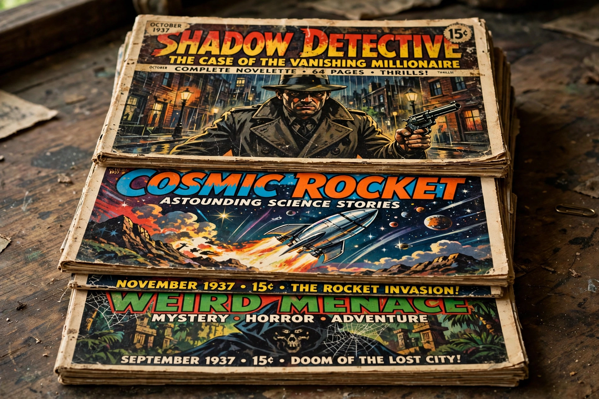

| Era | 1896–1950s |
|---|---|
| Named for | Cheap wood-pulp paper |
| Typical price | 10 cents |
| Genres | Detective, science fiction, western, adventure, horror, romance |
| Famous titles | Argosy, Adventure, Black Mask, Weird Tales, Amazing Stories, The Shadow |
| Succeeded by | Paperback books, comic books, digest magazines |

Pulp magazines (often called "the pulps") were inexpensive fiction magazines published from 1896 to the late 1950s. They were printed on cheap wood-pulp paper with untrimmed edges — in contrast to the glossy "slick" magazines — and sold for about ten cents. The pulps were the dominant popular-fiction medium of their era and launched modern genre fiction: detective stories, science fiction, westerns, horror and superhero adventure all took shape in their pages. The term pulp fiction now denotes lurid, sensational popular writing generally.
Frank Munsey's conversion of The Argosy to an all-fiction pulp format in 1896 began the boom. Publishers such as Street & Smith built empires on titles like Adventure, The Popular Magazine and the nickel-weekly successors featuring Nick Carter. The 1920s–30s were the golden age: specialised single-genre pulps proliferated, including Black Mask (home of hardboiled writers Dashiell Hammett and Raymond Chandler), Weird Tales (H. P. Lovecraft, Robert E. Howard), Hugo Gernsback's Amazing Stories (1926, the first science-fiction magazine), and hero pulps starring The Shadow and Doc Savage.
Wartime paper shortages, competition from paperback books, comic books, radio and television, and distribution upheavals killed most pulps by the mid-1950s; survivors converted to digest size. Writers including Ray Bradbury, Isaac Asimov and Robert A. Heinlein began their careers in the pulps, and the format's fast, vivid style shaped American popular culture.